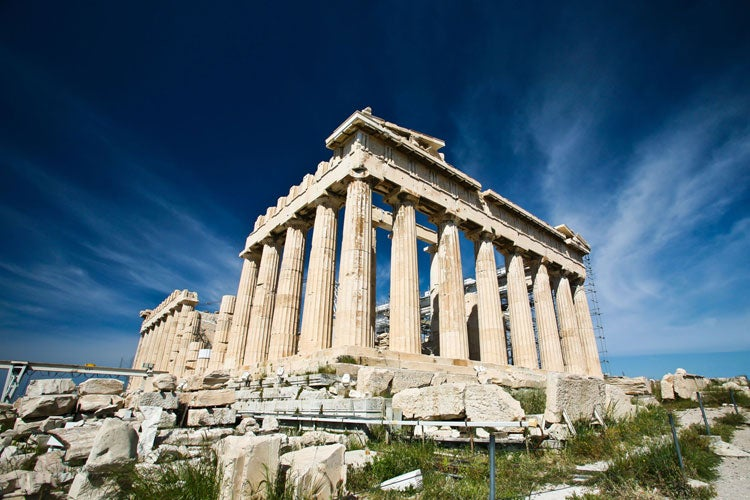
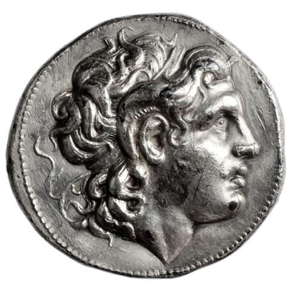
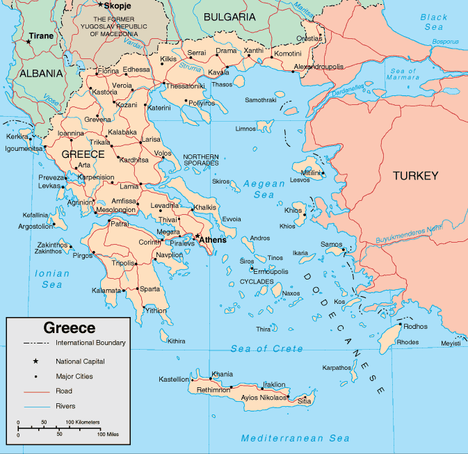

A Grécia é um país do sudeste da Europa com milhares de ilhas espalhadas pelos mares Egeu e Jônico. Bastante influente na antiguidade, a nação é considerada o berço da civilização ocidental. Atenas, sua capital, conserva monumentos como a Acrópole, do século V a.C., onde fica o templo Partenon. A Grécia também é conhecida por suas praias, como Santorini, com suas areias escuras, e os festivos complexos hoteleiros de Míconos.
- Capital: Atenas
- Continente: Europa
- Moeda: Euro
- População: 10,72 milhões
- Idioma oficial: Grego


